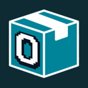

Best MCP servers for running many MCP servers (gateways and registries) (2026)
Gateways, proxies, registries and hosting platforms for teams that run many MCP servers: one endpoint for agents, central auth and access policy, logging, and a catalog of approved servers. Here are the 17 we list, ranked.
How we ranked them: each server here is listed in our MCP servers category and its listing says it does this job. We order them by the GitHub stars recorded on each listing, then visitor star ratings, then the most recent code push to the repo, then listing maturity. Servers without a tracked public repo come last. Links checked 2026-10-21. No paid placements.
The 17 MCP servers for running many MCP servers (gateways and registries), ranked

1. Kong Gateway
agent infraOpen source + cloud★ 44,278 GitHub starsCloud-native API, LLM and MCP gateway that adds routing, auth, multi-LLM support, semantic security and MCP traffic analytics through plugins.
Pricing (as stated): Open source + cloud · Mature · Last code push 2026-10-19

2. MCP Registry
MCP serversOpen source★ 7,389 GitHub starsOfficial community-driven registry service and API that lists Model Context Protocol servers for MCP clients, like an app store for servers.
Pricing (as stated): Free and open source (Apache-2.0, transitioning from MIT); public registry API free · Mature · Last code push 2026-10-11
3. Klavis AI
MCP serversOpen source + cloud★ 5,812 GitHub starsMCP integration platform that lets agents use many tools reliably at scale.
Pricing (as stated): Open source + cloud · Mature · Last code push 2026-06-01
4. agentgateway
MCP serversOpen source★ 5,373 GitHub starsProxy for AI agents and MCP servers with security and observability.
Pricing (as stated): Open source · Mature · Last code push 2026-10-20

5. ContextForge
MCP serversOpen source★ 4,646 GitHub starsIBM's gateway and registry that fronts MCP, A2A and REST APIs with one endpoint.
Pricing (as stated): Open source · Active · Last code push 2026-10-20

6. Observal
MCP serversOpen source★ 4,517 GitHub starsSelf-hosted registry and insight engine for sharing coding-agent skills, MCP servers and agents across a team.
Pricing (as stated): Open source · Active · Last code push 2026-10-19
7. mcpo
MCP serversOpen source★ 4,403 GitHub starsSimple proxy that exposes MCP servers as OpenAPI endpoints.
Pricing (as stated): Open source · Active · Last code push 2026-02-27

8. Archestra
MCP serversOpen source + cloud★ 4,373 GitHub starsEnterprise AI platform with guardrails, an MCP registry, gateway and orchestrator.
Pricing (as stated): Open source + cloud · Active · Last code push 2026-10-21

9. Jarvis Registry
MCP serversOpen source★ 3,648 GitHub starsOpen-source MCP and A2A agent gateway that connects copilots and agents to enterprise tools with identity, access control and observability.
Pricing (as stated): Open source · Active · Last code push 2026-10-19

10. Metorial
MCP serversSource-available + cloud★ 3,367 GitHub starsOpen-source identity and access layer that connects AI agents to 1,200+ integrations via MCP, CLI or API with auth, permissions and observability.
Pricing (as stated): Source-available + cloud · Active · Last code push 2026-10-18
11. mcp-proxy
MCP serversOpen source★ 2,791 GitHub starsBridge between Streamable HTTP and stdio MCP transports.
Pricing (as stated): Open source · Active · Last code push 2026-10-14

12. MetaMCP
MCP serversOpen source★ 2,710 GitHub starsAggregator and gateway that combines many MCP servers into one.
Pricing (as stated): Open source · Active · Last code push 2026-06-22

13. MCPHub
MCP serversOpen source★ 2,539 GitHub starsSelf-hosted MCP gateway for managing many servers.
Pricing (as stated): Open source · Active · Last code push 2026-10-21

14. ToolHive
MCP serversOpen source★ 2,293 GitHub starsStacklok platform that runs MCP servers in isolated containers with per-request identity, access policy and observability.
Pricing (as stated): Open source · Active · Last code push 2026-10-21

15. Unla
MCP serversOpen source★ 2,241 GitHub starsLightweight MCP gateway that turns existing MCP servers and APIs into MCP endpoints without code changes, with a management UI.
Pricing (as stated): Open source · Active · Last code push 2026-10-20
16. Obot
MCP serversOpen source + cloud★ 1,109 GitHub starsOpen-source platform for companies to host, approve and govern MCP servers, skills and agent access in one place.
Pricing (as stated): Open source + cloud · Active · Last code push 2026-10-20

17. Smithery
MCP serversFreemiumRegistry for finding and installing MCP servers.
Pricing (as stated): Free + paid · Active
Filter these live in the directory: MCP servers matching “gateway”, sorted by GitHub stars. You can add pricing and open-source filters there.
How to choose
- If you only need to find servers, a registry (the official MCP Registry, Smithery) is enough. If you need one endpoint, auth and policy across many servers, look at a gateway.
- Open-source gateways (agentgateway, ContextForge, MetaMCP, MCPHub, Unla) can run on your own infrastructure; hosted platforms trade that for less setup.
- Check which transports each one supports (stdio, Streamable HTTP) and whether it can isolate servers in containers.
- Only connect servers you trust: an MCP server can read and act on whatever its credentials allow.
FAQ
What are the best MCP servers for running many MCP servers (gateways and registries)?
Ranked by tracked GitHub stars, then visitor ratings and recent code activity, the top MCP servers for running many MCP servers (gateways and registries) in our directory are Kong Gateway, MCP Registry, Klavis AI, agentgateway, ContextForge. Stars show popularity, not fit, so try two or three on your own setup.
Are there free MCP servers for running many MCP servers (gateways and registries)?
15 of the 17 servers here are listed as open source. Pricing on this page, as each maker states it: Open source (11), Open source + cloud (4), Source-available + cloud (1), Freemium (1). Open-source servers can still need a paid account with the service they connect to.
How does AgentScout rank these MCP servers?
By the GitHub stars recorded on each listing, then visitor star ratings, then the most recent code push to the repo, then listing maturity. Servers without a tracked public repo come after those with one. There are no paid placements.
Which apps can use these MCP servers?
Any MCP client: Claude Desktop, Claude Code, Cursor, Codex, VS Code with Copilot, Windsurf and others. Each server's own docs give the exact config; our free MCP config builder can write the JSON for you.
Related tasks
Databases · Web search and scraping · Code, issues and CI · Monitoring and incidents · Productivity and team apps · Marketing, SEO and analytics · All MCP servers by task
More: All 232 MCP servers · Free MCP servers · For Claude Code · For Cursor · MCP config builder
Facts come from our directory listings and each project's GitHub repo; pricing is as each maker states it and can change. Missing a server? Submit it free.